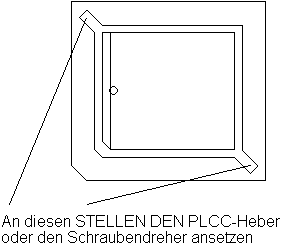
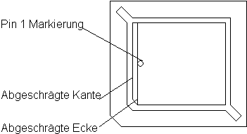

Previous
Next
TOC
Die MagnumSTE ist eine Fastramkarte (ähnlich wie die AixTT für TT030
und die Magnum für den Falcon030) für die MegaSTE-Computer Serie.
Mit Hilfe der MagnumSTE können die MegaSTE-Computer je nach bereits
vorhandenen Speicher- und Peripherieausbau auf bis zu 12 Megabyte
Hauptspeicher aufgerüstet werden. Es können dabei ausschließlich
PS/2 SIMM-Module der Größen 4MB, 8MB eingesetzt werden,
wobei es egal ist, ob die Speicherchips als
Fastpage-DRAM oder
EDO
Ausführung auf der SIMM-Platine sitzen. Grundsätzlich wird der neue
Speicher ab 4MB in den Adressraum des Prozessors eingeblendet und
endet bei 12MB. Wenn ein 8MB Modul in die Karte eingesetzt ist und
im VME Bus eine Karte steckt, die den Speicher ab 10MB nutzt, muß der
Jumpers JP1 gesetzt werden um den Speicher auf der Karte auf 6MB zu
begrenzen. Mit dem HiMem-Programm können dann zwei weitere 512KB
Blöcke im oberen Speicherbereich genutzt werden.

Zum Einbau muß man alle Kabel vom Rechner entfernen. Dann wird der
Rechner geöffnet (alle(!) Schrauben auf der Unterseite lösen und
entfernen). Nun muß der Prozessor mit einem PLCC-Heber oder behelfs-
weise mit einem kleinen Schraubendreher aus dem Sockel gehoben werden.

Nun wird die MagnumSTE Platine entsprechend der Markierung in den
Sockel gesetzz, anschließend wird der Prozessor richtigrum in den
leeren Sockel auf der MagnumSTE gesteckt.
weiterblättern
Kapitel Die MagnumSTE Karte für alle MegaSTE Computer, Seite 1